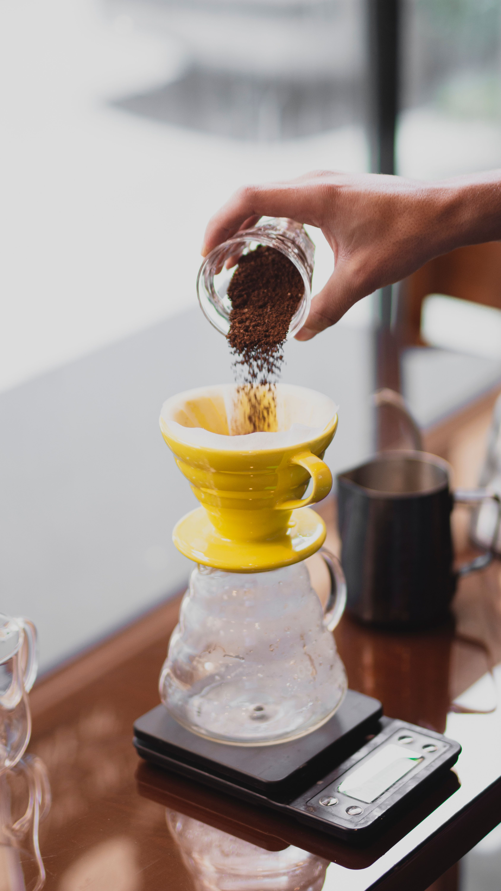
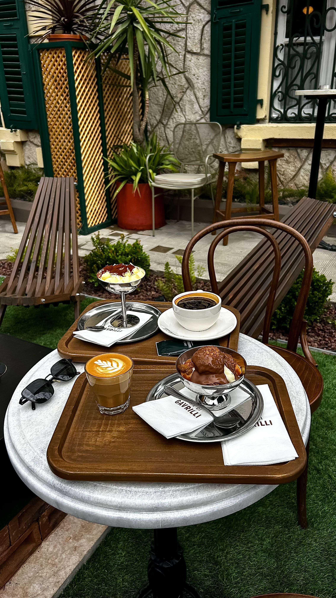
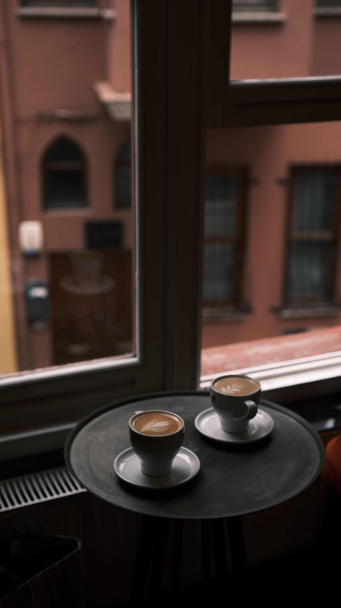
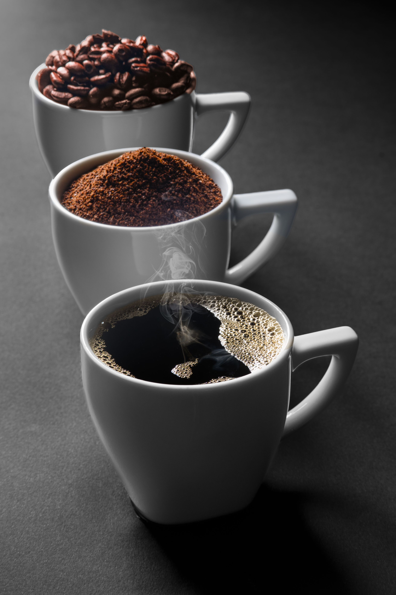
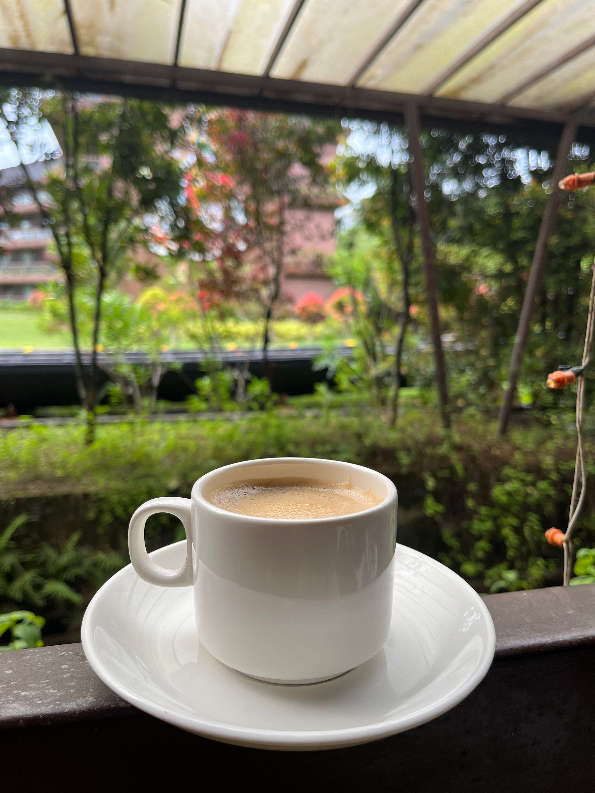

Galeri Nusantara Lestari Coffee
Media Usaha





cerita kedai
Dengarkan cerita singkat tentang kedai kopi Nusantara Lestari Coffee melalui audio berikut:





Dengarkan cerita singkat tentang kedai kopi Nusantara Lestari Coffee melalui audio berikut: